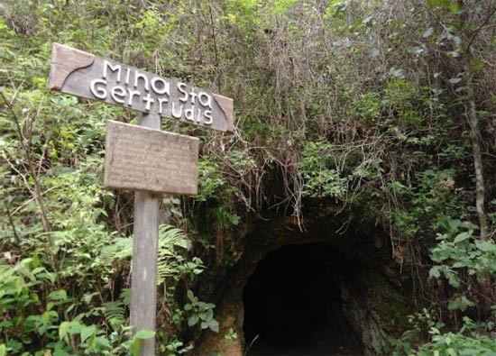

Para conocer su origen nos remontaremos al año de su fundación en 1605
año en el que se le conocía como Real de San Sebastian, era un pueblo
minero muy prospero gracias a la inversión extranjera.

Se dice que su población en esa época era de más de 20 mil habitantes
ya que la producción de oro y plata era el principal impulsor de su economía.
En el año 1921 las empresas decidieron llevar su inversión a otros lugares
debido a la disminución de los metales en las minas, lo cual ocasionó
el cierre de estas mismas.
A partir de ello la población comenzó a disminuir considerablemente en
busqueda de mejores oportunidades hasta llegar a su población actual
de alrededor de 5 mil habitantes.